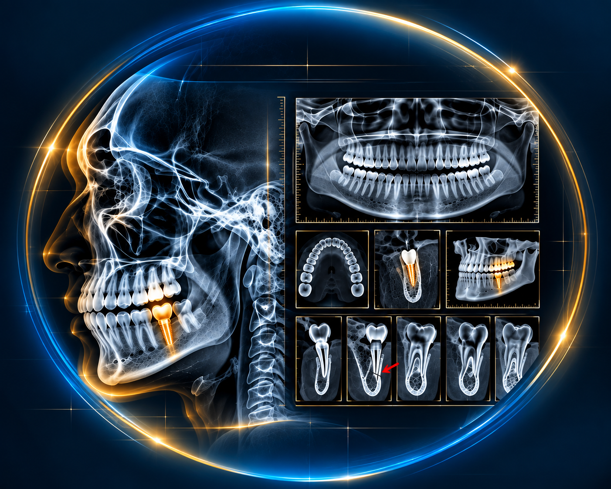

RADIOLOGIA ODONTOLÓGICA DIGITAL
RADIOLOGIA
ODONTOLÓGICA
QUE
TRANSFORMA
DECISÕES.
Laudos de radiologia odontológica e análise de tomografia computadorizada Cone Beam para apoiar cirurgiões-dentistas no diagnóstico por imagem, no planejamento de implantes, endodontia e avaliação de estruturas maxilofaciais.
